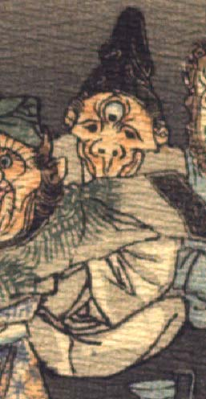

老人のような鬼。黒い頭巾状のものをかぶり、額の真ん中に丸い3つ目の目玉がついている。左右の目は黒い。鼻は上を向き、鼻の下が長い。頬はこけている。灰色の衣服を着て、座っているようである。
著作者：J.Dautremer／出典：親書誌：U426_nichibunken_0123：Le vieillard et les démons／日付：2006／資源識別子：U426_nichibunken_0123_0003_0015
Copyright (c)2010- International Research Center for Japanese Studies, Kyoto, Japan. All rights reserved.